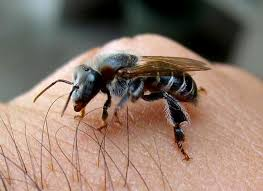

Arraste a imagem até aqui!
Abelhas Nativas do Piauí
Conheça cinco espécies importantes para o meio ambiente

🐝 Tiúba
A abelha Tiúba é uma espécie de abelha sem ferrão encontrada principalmente em regiões tropicais do Brasil. É conhecida por sua coloração escura e porte pequeno. Essas abelhas são muito tranquilas e vivem em colônias pequenas. São excelentes polinizadoras e têm um papel importante na manutenção da biodiversidade. Seu mel é escasso, mas muito valorizado por suas propriedades medicinais.

🐝 Jandaíra
A Jandaíra (Melipona subnitida) é uma abelha sem ferrão típica do Nordeste do Brasil, especialmente do semiárido. É muito adaptada ao clima seco e consegue produzir mel mesmo em condições adversas. Sua coloração é clara, e o mel produzido por ela tem sabor suave e é altamente valorizado. As colônias vivem em ocos de árvores ou caixas.

🐝 Jataí
A Jataí (Tetragonisca angustula) é uma das abelhas sem ferrão mais conhecidas no Brasil. Muito dócil, é ideal para criação em áreas urbanas. É facilmente reconhecida por sua coloração amarelada e pequeno tamanho. Produz um mel com sabor único, levemente cítrico, e de alto valor medicinal. Seus ninhos são feitos em paredes, troncos ou caixas próprias.

🐝 Canudo
A abelha Canudo (Scaptotrigona sp.) recebe esse nome por causa da forma dos seus tubos de entrada no ninho. É uma espécie robusta, preta e também sem ferrão. Produz uma quantidade considerável de mel e própolis, ambos com alto valor terapêutico. Seus ninhos são geralmente encontrados em troncos ocos e são fáceis de manejar.

🐝 Uruçu
A Uruçu (Melipona scutellaris) é uma das maiores abelhas sem ferrão do Brasil. Muito valorizada no Nordeste, essa espécie produz um mel de sabor forte e aroma intenso, amplamente utilizado na medicina popular. É conhecida por sua docilidade e inteligência na construção dos ninhos, geralmente em ocos de árvores ou colmeias racionais. A Uruçu é excelente para a polinização e fundamental na preservação de florestas tropicais.